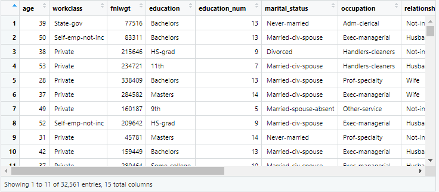
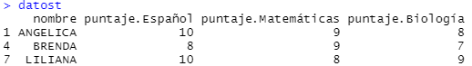
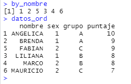

Introducción¶
En esta sección se aprenderá la forma de leer y manejar datos en R, ya sea usando las funciones o usando filtros para obtener la información deseada.
Lectura de datos¶
R tiene objetos dedicados al manejo de datos, por ejemplo el objeto data.frame, aunque tambien pueden usarse otros paquetes para el mismo fin.
En esta sección se mostrará la forma de crear datasets y leer archivos externos en R.
Lectura de datos externos en R¶
R tiene muchos paquetes que permiten leer una gran cantidad de tipos de archivos externos. El tipo de archivos más común es el archivo delimitado por comas o CSV.
El siguiente código muestra como leer un archivo externo.
1 | |
El resultado se muestra a continuación.

Asistente de importación
RStudio cuenta un asistente de importación que nos permite visualizar los datos que se van a importar o seleccionar el tipo de dato.
Leer archivos de excel¶
Para leer archivos es formato de Excel, se puede hacer uso de la librería readxl y la función read_excel.
El siguiente código muestra su uso:
1 2 | |
Para más información visite readxl.
Importar datos otros softwares¶
El paquete haven permite leer y escribir bases de diversos archivos.
El siguiente código muestra como importar un archivo de SAS ® software.
1 2 | |
Para más información visite haven.
Lectura de datos desde la web¶
Para leer datos de internet, se puede usar la función read.csv() y pasarle la dirección web donde se encuentra el archivo.
El siguiente ejemplo muestra cómo descargar datos de covid desde una dirección web.
1 | |
Manipulación de datos¶
En esta sección se abordará el tema de manejo y manipulación de bases en R.
Para ello es necesario conocer un poco acerca de la base con la que se estará trabajando.
Posteriormente se conocerán las distintas formas de filtrar datos y realizar otro tipo de operaciones.
Exploración de datos¶
Una forma de saber el tipo de datos que se ha importado es mediante el comando class(), este comando nos devolverá el nombre de la estructura correspondiente en R.
Para conocer la dimensión del objeto, se puede usar el comando dim().
Dimensiones
Otra forma de saber las dimensiones de una base es mediante los comandos nrow() y ncol().
Si se desea conocer un resumen con estadísticas descriptivas, se puede usar el comando summary.
Los siguientes códigos ilustran los comandos previos:
1 2 3 | |
Para conocer el nombre de las variables de un dataset, se puede usar el comando names(), por ejemplo
1 | |
Es posible referirse a los nombres de las variables usando el comando attach, es decir
1 | |
Cuidado con los nombres iguales
Si dos o más variables tienen el mismo nombre, se usará la variable de la nueva base.
Otra forma de visualizar los datos es mediante el uso de las funciones head() y tail(). Estas nos permiten ver el contenido de un dataset sin saturar la ventana de resultados.
Las funciones solo requieren que se le pase el nombre del dataframe y opcionalmente el número de registros a visualizar.
Filtrado de datos¶
Para realizar un filtrado de datos en R, se pueden usar los vectores lógicos, de esta forma, aquellas observaciones que cumplan con la condición, serán las observaciones elegidas.
Por ejemplo, el siguiente código muestra cómo elegir a los alumnos que pertenecen al grupo A.
datos:
| nombre | grupo | puntaje |
|---|---|---|
| ANGELICA | A | 10 |
| ANGEL | B | 9 |
| ANGELES | C | 8 |
| BRENDA | A | 8 |
| BRUNO | D | 9 |
| BEN | B | 7 |
| LILIANA | A | 10 |
| CARLOS | B | 8 |
| LUIS | C | 9 |
1 2 | |
Esto también se puede hacer en una sola operación, pasándole directamente la expresión.
1 | |
El siguiente cuadro muestra los operadores lógicos que existen en R
| Operador | Nombre | Ejemplo |
|---|---|---|
== |
Igual a | x == "A" |
< |
Menor que | x < 5 |
> |
Mayor que | x > 5 |
<= |
Menor o igual a | x <= 5 |
>= |
Mayor o igual a | x >= 5 |
!= |
No es igual a | x != "A" |
Adicionalmente existe el operador %in% que nos ayuda a seleccionar varios valores que estén en un vector, por ejemplo para seleccionar alumnos que pertenezcan al grupo “A” o “C”, se puede usar el siguiente código:
1 2 | |
Para más información consulte la ayuda con el comando ?match.
Recodificación de variables¶
Si se desea recodificar variables, se puede usar la función ifelse() para crear una nueva variable en un dataframe.
Por ejemplo, supóngase que la base datos contiene la variable sexo con el valor 1 para mujeres y el 2 para hombre, se puede crear la variable genero que tenga el valor “F” para mujeres y “M” para hombres, como se muestra en el siguiente código.
1 | |
Si se tienen más de 2 categorías, se pueden anexar dentro de la función otra función ifelse() en el tercer argumento, por ejemplo:
1 2 | |
Para más información, vea la ayuda con el comando ?ifelse.
Transformación de bases¶
En ocasiones es necesario ordenar los datos que están agrupados en formato largo o en formato amplio. Estos datos se usan usualmente cuando se tiene información de individuos a lo largo del tiempo.
Considere la siguiente tabla que está en formato largo.
| nombre | materia | puntaje |
|---|---|---|
| ANGELICA | Español | 10 |
| ANGELICA | Matemáticas | 9 |
| ANGELICA | Biología | 8 |
| BRENDA | Español | 8 |
| BRENDA | Matemáticas | 9 |
| BRENDA | Biología | 7 |
| LILIANA | Español | 10 |
| LILIANA | Matemáticas | 8 |
| LILIANA | Biología | 9 |
Si se desea transformar esta base en formato amplio, se puede usar el siguiente código.
1 | |
La función reshape() transforma el dataset datos a un formato amplio, esto se logra con la instrucción direction = "wide". El individuo considerado se especifica con idvar = "nombre". Finalmente la variable que será convertida a columna será timevar = "materia". Note que los valores de puntaje serán los que serán movidos en el orden correspondiente.
El resultado se muestra a continuación.

Para conocer más sobre la función escriba el comando ?reshape.
Uniones de bases¶
Cuando se tiene información en 2 o más bases, es posible unirlas mediante una variable llave.
datos:
| nombre | sex | grupo | puntaje |
|---|---|---|---|
| ANGELICA | 1 | A | 10 |
| BRENDA | 1 | A | 9 |
| LILIANA | 1 | B | 8 |
| MARCO | 2 | B | 8 |
| FABIAN | 2 | C | 9 |
| MAURICIO | 2 | C | 7 |
info:
| nombre | apellido | edad |
|---|---|---|
| ANGELICA | Álvarez | 20 |
| BRENDA | Aguilar | 19 |
| LILIANA | Sánchez | 18 |
| MARCO | Zúñiga | 18 |
| FABIAN | Castillo | 29 |
| MAURICIO | Pérez | 27 |
Para ejecutar esto en R, se puede usar la función merge(). Esta función requiere como argumentos, las base a unir así como especificar el nombre de la llave. El siguiente ejemplo muestra cómo unir las 2 tablas usando la variable nombre como llave.
1 | |
El resultado se muestra a continuación.

Para más información use el comando ?merge para conocer cómo realizar otro tipo de uniones.
Ordenando una base¶
La forma de ordenar una base en R, es un poco distinta a otros lenguajes de programación, debido a que R no tiene una función para ordenar un dataframe, sin embargo se puede lograr con la instrucción order() y posteriormente pasarle el resultado como un índice de renglones, por lo que la base estará ordenada.
El siguiente ejemplo muestra cómo ordenar la base de alumnos por el nombre.
1 2 | |
Primero se construye un vector que contiene los índices de las observaciones ya ordenadas. En la siguiente línea se crea una copia del dataframe con dichos índices, por lo que el nuevo dataframe ya estará ordenado.

Para saber más acerca del ordenamiento de variables, consulte la ayuda escribiendo ?order en la consola.